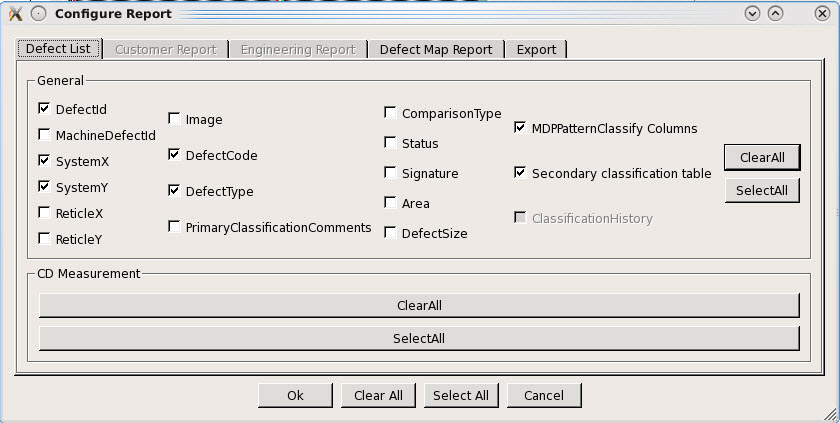

You can configure
the Defect List report and Defect Map report by invoking the Configure Reports
dialog box from the Inspection Review Reports window.
Procedure
Invoke the Inspection Review
Reports window (Reports > Show Inspection
Reports).
Select the reports that you
wish to generate in the Inspection Review Reports window.
Click the Configure button. The Configure
Report dialog box appears.
Figure 1. Configure Reports
Dialog Box Tabs

Click one
of the tabs listed in Table 1 to configure or export a report. Click
a check box to activate or deactivate the display of a particular
report entry.
Table 1. Configure Report Tabs
Tab
Description
Defect List
Select which General
or CD Measurement information to display.
Only the Defect List columns that are configured
to be visible in the dat-ini.xml file
are enabled in the Defect List configuration options.
Defect Map Report
Select Reticle Image,
and Highlight Dropout Die(s).